ATmega32u4
| 译者: | gashero |
|---|---|
| 日期: | 2013-10-02 |
目录
- 1 引脚配置
- 2 概览
- 3 关于
- 4 AVR CPU 核心
- 5 存储器
- 6 系统时钟和时钟选项
- 7 电源管理与睡眠模式
- 8 系统控制与复位
- 9 中断
- 10 I/O端口
- 11 外部中断
- 12 定时器0、定时器1、定时器3预分频器
- 13 8bit定时器0
- 14 16bit定时器1和3
- 15 10bit高速定时器4
- 16 输出比较模块
- 17 SPI
- 18 USART
- 19 USART在SPI模式
- 20 TWI
- 21 USB控制器
- 22 USB设备操作模式
- 23 模拟比较器
- 24 ADC
- 25 JTAG与片内调试
- 26 IEEE 1149.1 JTAG边界扫描
- 27 BootLoader支持 Read-While-Write自编程
- 28 存储器编程
- 29 电气参数
- 30 典型参数
- 31 寄存器总结
- 32 指令集总结
- 33 附录
最高16Mhz
片内2周期乘法器
16/32KB Flash
1.25/2.5KB SRAM
512B/1KB EEPROM
JTAG接口
USB2.0 全速/低速，包含中断和传输完成
- 完整支持USB2.0
- 支持数据传输速率12Mbit/s和1.5Mbit/s
- 端点0用于控制传输：最高64Byte
- 6个可编程端点，IN/OUT，模式批量、中断、同步
- 配置端点大小最高到256Byte，在双行模式(double bank mode)
- 完全独立的832Byte USB DPRAM，用于端点内存分配
- 挂起/恢复中断
- 可在USB总线复位时，复位CPU
- 48MHz PLL全速总线操作
- 可编程的USB总线连接/断开
- 低速模式无需晶振
外设功能
- 片内PLL供USB和高速定时器，32~96MHz
- 一个8bit定时器，独立分频器
- 二个16bit定时器，独立分频器
- 一个10bit高速定时器，包含PLL(64MHz)
- 4个8bit PWM通道
- 4个PWM通道，可编程分辨率2~16bit
- 6个PWM通道供高速操作，可编程分辨率2~11bit
- 输出比较模块
- 12通道10bit ADC，每个通道独立可编程增益
- 可编程的USART，包含硬件流控
- 主/从SPI
- TWI/I2C
- 可编程看门狗
- 片内模拟比较器
- 中断和唤醒引脚
- 片内温度传感器
特殊的MCU功能
- 上电复位和可编程的低电压检测
- 内置8MHz标定振荡器
- 内部时钟分频器，运行时时钟切换(内部RC/外部晶振)
- 外部和内部中断源
- 6个睡眠模式：IDLE、ADC降噪、省电、掉电、待机、扩展待机
IO与封装
- 所有IO兼容CMOS输出和LVTTL输入
- 26个可编程IO线
- TQFP-44 10x10mm
- QFN-44，7x7mm
操作电压2.7~5.5V
1 引脚配置
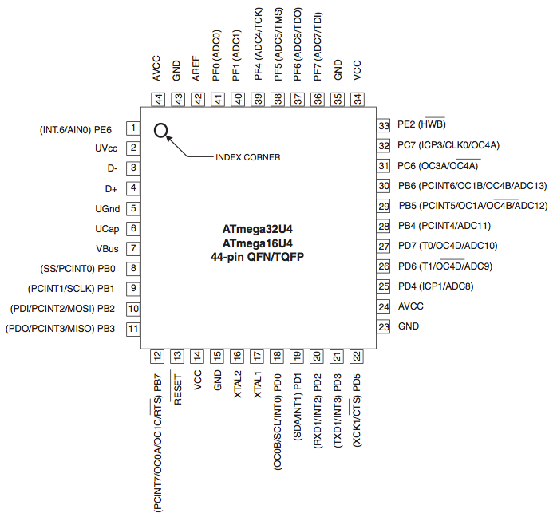2 概览
ATmega16u4/ATmega32u4时低功耗CMOS 8bit微控制器，基于AVR增强RISC架构。通过强大的单周期指令集，可以达到1MIPS/MHz的速度，允许优化耗电量和计算速度。
@page 4-7 系统框图
3 关于
@page 8-8
4 AVR CPU 核心
@page 9-17
5 存储器
@page 18-26
6 系统时钟和时钟选项
6.1 时钟系统及其分配
@page 27-28
6.2 时钟源
有如下时钟源可选，通过Flash熔丝位。所选时钟源进入AVR时钟生成器，并分配到各个模块。
对于熔丝的"1"就是未编程，而"0"表示已编程。
| 设备时钟选项 | CKSEL[3:0]/EXCKSEL[3:0] |
| 低功耗晶振 | 1111-1000 |
| 保留 | 0111-0110 |
| 低频晶振 | 0101-0100 |
| 保留 | 0011 |
| 标定的内部RC振荡器 | 0010 |
| 外部时钟 | 0000 |
| 保留 | 0001 |
6.2.1 缺省时钟源(ATmega16U4 & ATmega32U4)
默认使用低功耗晶振(8MHz~16MHz)，并被8分频(CKDIV8)。结果是1MHz的系统时钟。
6.2.2 缺省时钟源(ATmega16U4RC & ATmega32U4RC)
默认使用标定的内部RC振荡器(8MHz)，并被8分频(CKDIV8)。结果是1MHz的系统时钟。
6.2.3 时钟启动序列
@page 29-29
6.3 低功耗晶振
@page 29-31
6.4 低频晶振
@page 31-31
6.5 标定的内部RC振荡器
@page 32-33
6.6 外部时钟
@page 33-34
6.7 时钟选择
@page 34-35
6.8 时钟选择算法
@page 35-37
6.9 时钟输出缓冲
@page 37-39
6.10 PLL
@page 39-42
7 电源管理与睡眠模式
@page 43-48
8 系统控制与复位
@page 49-60
9 中断
9.1 中断向量
- 0x0000=RESET：扩展引脚、上电复位、低电压复位、看门狗复位、JTAG复位
- 0x0002=INT0：外部中断请求0
- 0x0004=INT1：外部中断请求1
- 0x0006=INT2：外部中断请求2
- 0x0008=INT3：外部中断请求3
- 0x000a：保留
- 0x000c：保留
- 0x000e=INT6：外部中断请求6
- 0x0010：保留
- 0x0012=PCINT0：引脚改变中断请求0
- 0x0014=USB General：USB通用中断请求
- 0x0016=USB Endpoint：USB端点中断请求
- 0x0018=WDT：看门狗超时中断
- 0x001a：保留
- 0x001c：保留
- 0x001e：保留
- 0x0020=TIMER1 CAPT：Timer1捕获事件
- 0x0022=TIMER1 COMPA：Timer1比较匹配A
- 0x0024=TIMER1 COMPB：Timer1比较匹配B
- 0x0026=TIMER1 COMPC：Timer1比较匹配C
- 0x0028=TIMER1 OVF：Timer1溢出
- 0x002a=TIMER0 COMPA：Timer0比较匹配A
- 0x002c=TIMER0 COMPB：Timer0比较匹配B
- 0x002e=TIMER0 OVF：Timer0溢出
- 0x0030=SPI(STC)：SPI传输完成
- 0x0032=USART1 RX：USART1接收完成
- 0x0034=USART1 UDRE：USART1数据寄存器空
- 0x0036=USART1 TX：USART1发送完成
- 0x0038=ANALOG COMP：模拟比较器
- 0x003a=ADC：ADC转换完成
- 0x003c=EE READY：EEPROM就绪
- 0x003e=TIMER3 CAPT：Timer3捕获事件
- 0x0040=TIMER3 COMPA：Timer3比较匹配A
- 0x0042=TIMER3 COMPB：Timer3比较匹配B
- 0x0044=TIMER3 COMPC：Timer3比较匹配C
- 0x0046=TIMER3 OVF：Timer3溢出
- 0x0048=TWI：TWI事件
- 0x004a=SPM READY：存储程序存储器就绪
- 0x004c=TIMER4 COMPA：Timer4比较匹配A
- 0x004e=TIMER4 COMPB：Timer4比较匹配B
- 0x0050=TIMER4 COMPD：Timer4比较匹配D
- 0x0052=TIMER4 OVF：Timer4溢出
- 0x0054=TIMER4 FPF：Timer4失败保护中断
如果BOOTRST熔丝被编程，则复位时跳转到BootLoader地址。当设置了MCUCR寄存器的IVSEL，向量表可以移动到Boot Flash段。每个中断向量地址是次地址加上Boot Flash段的首地址。
@page 62-64
10 I/O端口
@page 65-84
11 外部中断
@page 85-88
12 定时器0、定时器1、定时器3预分频器
Timer0/1/3共享相同的预分频模块，但是可以有不同的分频设置。以下的Tn中的n取0/1/3，表示三个定时器。
12.1 内部时钟源
定时器都可以用系统时钟直接驱动，这样速度最快。也可以用四种分频比例。分别是系统时钟的8、64、256、1024分频。
12.2 预分频复位
@page 89-90
13 8bit定时器0
@page 91-107
14 16bit定时器1和3
@page 108-137
15 10bit高速定时器4
@page 138-174
16 输出比较模块
@page 175-176
17 SPI
高速同步通信，包括如下功能：
- 全双工，三线同步数据传输
- 主从操作
- LSB优先或MSB优先数据传输
- 7种可编程比特率
- 传输结束中断
- 写碰撞标识保护
- 从IDLE模式唤醒
- 倍速主SPI模式(CK/2)
USART也可以用于主模式SPI。PRSPI位必须写0来启用SPI模块。
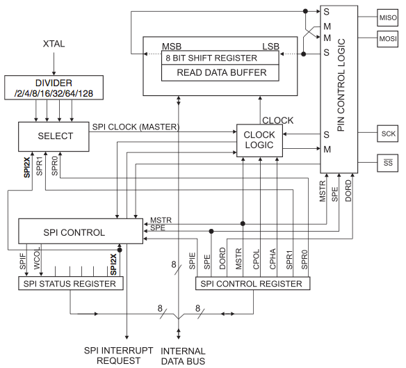@page 177-185
18 USART
@page 186-213
19 USART在SPI模式
@page 214-222
20 TWI
@page 223-252
21 USB控制器
21.1 功能
支持全速和低速设备
符合USB2.0规范
支持ping-pong模式(dual bank)
832字节的DPRAM：
- 1个最大64字节端点(缺省控制端点)
- 1个最大256字节端点(1或2个bank)
- 5个最大64字节端点(1或2个bank)
低速模式无需晶振
21.2 框图

USB控制器提供了USB连接到双端口存储器(DPRAM, Double Port Memory)的数据流控制。
USB控制器需要48MHz +/- 0.25%的参考时钟(全速)，从内部PLL输出。片内PLL生成器提供内部高频(48MHz)时钟。PLL时钟输入可以配置为使用外部低功耗晶振，外部时钟源或内部RC。
48MHz时钟用于生成USB差分数据收发的12MHz位时钟。时钟恢复通过DPLL(Digital Phase Locked Loop, 数字锁相环)，以符合USB规范的抖动指标。
为执行(comply)USB电气规范，USB缓冲(D+或D-)应该以3.0~3.6V驱动。而ATmega16U4/ATmega32U4最高可以到5.5V，所以需要内部的调节器来提供USB缓冲电压。
21.3 典型应用实现
依赖于应用的供电方式，需要不同的硬件实现方式。
3.0V以下USB无法工作。3.0~4.5V可以工作在8MHz，4.5~5.5V可以工作在16MHz。3.4~5.5V之间都需要内部调节器。
21.3.1 总线供电设备
UID=>UID、UVSS=>UGND，直接连接到芯片。D+和D-通过22Ohm电阻连接到芯片。VBUS直接连接到Vcc电源。VCAP通过1uF电容接地。UGND不接地。
21.3.2 自供电设备
VBUS=>VBUS、UVSS=>UGND、UID=>UID。D+和D-通过22Ohm电阻连接到芯片。UCAP通过1uF电容接地。UGND接地。
21.4 无晶振操作
为减少外部组件数量和成本，可以配置为使用标定的内部RC振荡器作为PLL输入时钟，此时只能工作在USB低速。可以确保0~40摄氏度范围内的频率稳定。
对USB低速，只能使用外部晶振或内部时钟源。
21.5 设计指导
- USB数据线的电阻必须是22Ohm(+/- 5%)
- 从USB接口到单片机的线路越短越好，并遵守差分走线路由规则(相同长度，尽可能靠近，避免积累)
- 电压瞬变/静电抑制器也可以用于防止USB焊盘损坏的外部干扰
- U_cap电容应该是1uF(+/- 10%)
- 建议在VBUS线上连接10uF电容
21.6 通用操作模式
21.6.2 上电复位
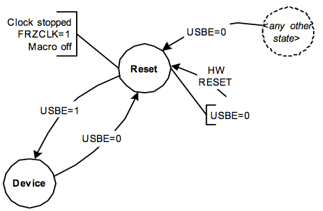USB控制器在硬件复位后的状态是"复位(Reset)"：
- USBE=0
- USB控制器时钟停止FRZCLK=1
- USB控制器被禁用
- USB pad被挂起
- 设备USB控制器内部状态是复位
在设置USBE后，USB控制器进入设备状态，控制器是"Idle"。
USB控制器可以在任何时候通过清零USBE来停止。实际上清零USBE执行的是硬件复位。
21.6.3 中断
USB接口分配到两个中断向量。USB通用中断、端点中断。
USB通用中断源：
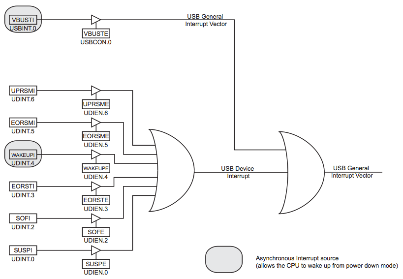几乎所有这些中断都是时间相关的，可以通过USB时钟是否开启来检测，除了：
- VBUS插入检测(插入、拔出)
- WAKEUP中断在每次数据线状态改变时
异步中断允许从掉电模式唤醒设备，通常用于在USB进入挂起模式时。
端点中断源：
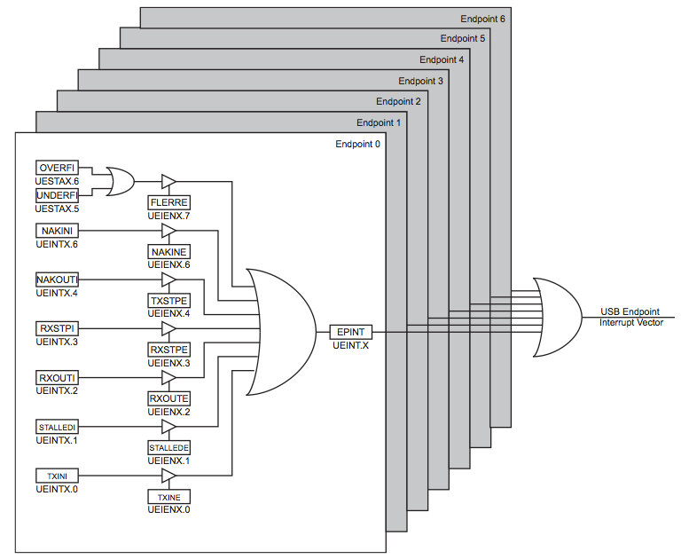每个端点根据中断源有8个标识，每个中断源都可以启用或设置为不触发端点中断。一个端点如果开启了至少一个中断源，且中断发生，则对应事件进入端点中断处理向量。用户读取UEINT寄存器，得以检测中断源，然后根据标识处理对应的操作。
21.7 电源模式
21.7.1 Idle模式
此时CPU核心挂起(CPU时钟停摆)。不管USB控制器是否运行都可以进入Idle模式。USB中断会唤醒CPU。
21.7.3 冻结时钟
程序可以通过设置FRZCLK位来降低功耗，这会冻结USB控制器的时钟。此时仍然可以访问如下寄存器：
- USBCON、USBSTA、USBINT
- UDCON(拔出,...)
- UDINT
- UDIEN
设置FRZCLK后，只有如下中断会触发：
- WAKEUPI
- VBUSTI
21.8 速度控制
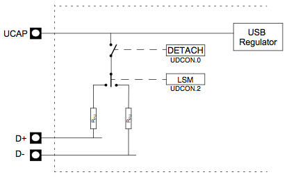速度选择(全速/低速)基于D+/D-的上拉。UDCON寄存器的LSM位可以选择内部上拉。D-上拉表示低速，D+上拉表示全速。
21.9 内存管理
控制器仅支持如下内存分配管理。
对管道或端点的预约只能是增量的(Pipe/Endpoint 0到最后的Pipe/Endpoint)。固件应该按照这个顺序来进行配置。
对管道或端点"k"的预约完成，以他的ALLOC位被设置。然后硬件分配内存，并插入Pipe/Endpoint "k^{i-1}" 和 "k^{i+1}" 之间。 "k^{i+1}" 管道/端点的内存则向上滑动，且数据丢失。注意"k^{i+2}"以及更之上的管道/端点的内存是不滑动的。
清零一个管道启用(PEN)或一个端点启用(EPEN)并不会清零其ALLOC位，以及其配置(EPSIZE/PSIZE、EPBK/PBK)。要释放这个内存，固件应该清零ALLOC位。然后"k^{i+1}"管道/端点的内存会自动下滑。注意"k^{i+2}"以及更向上的管道/端点内存并不会滑动。
下图是USB内存分配和识别的典型例子：
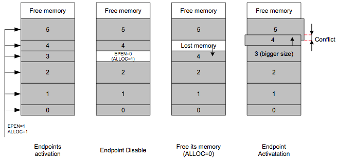- 端点0到端点5已经配置好了，按照升序，每个内存段都在DPRAM中被保留
- 端点3被禁用(EPEN=0)，但是其内存会被保留
- ALLOC位被清零，端点4向下滑动，但是端点5并不滑动
- 如果固件选择重新配置端点3，到更大，控制器会保留端点2之后的内存并滑动到端点4，而端点5并不会移动，并发生内存冲突，在端点4和端点5使用普通区域，其数据就丢失了
注意：
- 端点0的数据不会丢失，无论激活或禁用其上面端点，其数据仅在被禁用时丢掉
- 以相同参数禁用和重新启用相同端点，不会导致向高滑动的端点，对这些端点，数据会保留
- CFGOK在内存分配冲突时被硬件置位
21.10 PAD挂起
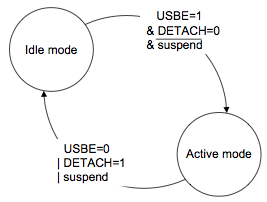pad行为：
- 在"idle"模式，pad进入低耗电模式
- 在"active"模式，pad工作
SUSPI标识表示检测到USB总线处于挂起状态。这个标识会自动将pad变为idle状态。检测到非idle事件会设置WAKEUPI标识，并唤醒USB pad。
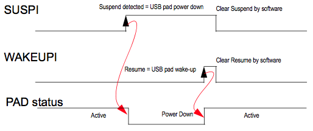当DETACH=1时，pad也会自动进入idle模式。且DETACH=0时会自动进入active模式。
21.11 插入检测
USB连接通过VBUS pad检测，依赖如下架构：
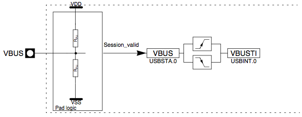VBUS pad的控制逻辑会输出一个信号表示VBUS电压级别：
- 当UVBUS pad大于等于1.4V时进入"session_valid"信号，低于1.4V时，信号非活跃
- 当"Session_valid"为活跃时，VBUS状态位置位
- VBUS状态改变时，置位VBUSTI标识
- 当VBUS位没有置位时，USB外设不能接入总线
21.12 寄存器描述
21.12.1 USB通用寄存器
UHWCON ：
| bit | 7 | 6 | 5 | 4 | 3 | 2 | 1 | 0 |
| 用途 | UVREGE | |||||||
| 读写 | R/W | R/W | R | R/W | R | R | R | R/W |
| 初始值 | 0 | 0 | 0 | 0 | 0 | 0 | 0 | 0 |
- bit[7-1]：保留，不要尝试修改
- bit0:UVREGE：USB pad调节器启用，=1时启用，=0时禁用
USBCON ：
| bit | 7 | 6 | 5 | 4 | 3 | 2 | 1 | 0 |
| 用途 | USBE | FRZCLK | OTGPADE | VBUSTE | ||||
| 读写 | R/W | R/W | R/W | R/W | R | R | R/W | R/W |
| 初始值 | 0 | 0 | 1 | 0 | 0 | 0 | 0 | 0 |
- bit7:USBE：USB宏启用，设置启用USB控制器，清零来禁用和复位USB控制器，禁用USB发射器和禁用USB控制器时钟输入
- bit6：保留，不要修改
- bit5:FRZCLK：冻结USB时钟，禁用时钟输入，降低功耗，清零来启用时钟输入
- bit4:OTGPADE：VBUS Pad启用，可以被USBE=0与否自动设置和清零，着允许VBUS检测USB宏是否被禁用
- bit[3-1]：保留，不要修改
- bit0:VBUSTE：VBUS发送中断启用位
USBSTA ：
| bit | 7 | 6 | 5 | 4 | 3 | 2 | 1 | 0 |
| 用途 | ID | VBUS | ||||||
| 读写 | R | R | R | R | R | R | R | R |
| 初始值 | 0 | 0 | 0 | 0 | 0 | 0 | 1 | 0 |
- bit[7-2]：保留
- bit1:ID：ID状态，读取总是1，仅用于兼容AT90USB64/128(用于标识OTG ID引脚)
- bit0:VBUS：VBUS标识，表示VBUS引脚的状态，可用于在设备模式种监控USB总线连接状态
USBINT ：
| bit | 7 | 6 | 5 | 4 | 3 | 2 | 1 | 0 |
| 用途 | VBUSTI | |||||||
| 读写 | R | R | R | R | R | R | R/W | R/W |
| 初始值 | 0 | 0 | 0 | 0 | 0 | 0 | 0 | 0 |
- bit[7-1]：保留
- bit0:VBUSTI：IVBUS事件中断标识，由硬件设置，当一个事物开始时，也由硬件清零
21.13 USB软件操作模式
依赖于USB操作模式，软件应该执行如下命令序列。
USB接口上电：
- USB pad调节器上电
- 配置PLL接口
- 启用PLL
- 检查PLL时钟
- 启用USB接口
- 配置USB接口(USB速度、端点配置等)
- 等待USB VBUS信息连接
- 连接(attach)USB设备
关闭USB接口：
- Detach USB接口
- 禁用USB接口
- 禁用PLL
- 禁用USB pad调节器
挂起USB接口：
- 清零挂起位
- 冻结USB时钟
- 禁用PLL
- 确保有中断启用来退出休眠模式
- 让MCU进入休眠模式
恢复USB接口：
- 启用PLL
- 等待PLL锁
- 解冻USB时钟
- 清零恢复信息
22 USB设备操作模式
22.1 简介
USB设备控制器支持全速和低速数据传输。除了缺省控制端点，还支持6个端点。可以配置位control、bulk、interrupt、isochronous模式。
- 端点0：可编程FIFO最大到64字节，缺省控制端点
- 端点1：可编程FIFO最大到256字节，在ping-pong模式
- 端点2~6：可编程FIFO最大到64字节，在ping-pong模式
控制器从"Idle"模式开始。次模式，pad功耗最小。
22.2 上电和复位
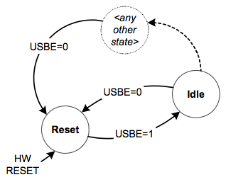上电复位后的状态转换。
设备控制器的复位状态：
- 宏时钟停止来最小化功耗(FRZCLK设置)
- USB设备控制器内部状态是复位(所有寄存器都是复位到缺省值，DETACH置位)
- 端点bank复位
- D+和D-上拉电阻不活跃(DETACH模式)
一旦DETACH位被清零且VBUS有效，则D+或D-的上拉电阻就会激活。
最低功耗后的复位的IDLE状态，并不需要激活PLL。
USB设备控制器参可以在任何时候通过清零USBE来复位(禁用USB接口)。
22.3 端点复位
端点可以在任何时候复位，通过UERST的EPRSTx对应位。会复位：
- 端点的内部状态机
- Rx和Tx bank会清零，内部指针恢复
- UEINTX、UESTA0X、UESTA1X会恢复到默认值
数据翻转字段保持不变。
其他寄存器保持不变。
端点配置保持活跃，端点仍然有效。
端点复位应该加上对数据翻转命令(RSTDT位)的清零，来作为CLEAR_FEATURE USB命令的应答。
22.4 USB复位
当USB线上检测到USB复位(SE0状态至少持续2.5uS)，下列操作会执行：
- 所有端点被禁用
- 缺省控制端点保持配置
如果CPU硬件复位(UDCON寄存器的RSTCPU位置位)，就会通知CPU复位，而不禁用USB控制器(这允许保持USB连接，在USB复位后的相同行为)。这可以用于增强设备可用性。
22.6 端点激活
只要EPEN位保持清零，端点就保持复位状态。
如下流程图展示了激活端点：
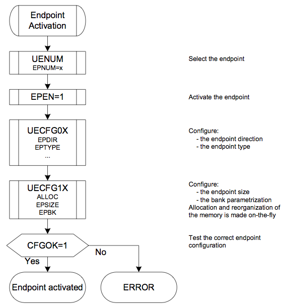在端点正确配置完之前(CFGOK清零)，硬件不会响应主机发来的包。
如果端点大小参数大于DPRAM值，则CFGOK不应该被设置。
清零EPEN来执行端点复位，同时也会触发如下动作：
- 端点配置被保留(EPSIZE、EPBK、ALLOC保留)
- 复位数据翻转字段
- 指派给端点的DPRAM存储器会保留
22.7 地址设置
USB设备地址是USB协议要求的：
- USB设备上电后，地址为0
- 主机发送SETUP命令 (SET_ADDRESS(addr))
- 固件处理该请求，记录地址到UADD，但是保持ADDEN为零
- USB设备发送IN指令，0字节
- USB设备启用USB设备地址，通过置位ADDEN，唯一可接受地址就是存储在UADD中的那个
ADDEN和UADD不应该在同时写入。
UADD在上电后，包含缺省地址0x00。
ADDEN在如下情况时被硬件清零：
- 上电复位
- 收到USB复位
- 宏被禁用(USBE清零)
当这个位被清零，就使用缺省设备地址0x00。
22.8 挂起、唤醒和恢复
在USB线非活跃的3mS期间，控制器切换到全速状态，并触发(如果启用了) SUSPI(挂起)中断。固件应该设置FRZCLK位。
CPU也可以进入idle模式来降低功耗(依赖于软件架构)。
由两种方法从挂起模式恢复：
- 第一是清零FRZCLK位，CPU不在idle模式时可以
- 第二是如果CPU在idle模式，就启用WAKEUPI中断(WAKEUPE置位)，控制器会尽快查看非idle信号，触发WAKEUPI中断，固件应该随后清零FRZCLK位来重启传输
SUSPI和WAKEUPI中断之间没有关系：WAKEUPI中断由数据线的非idle模式触发。因此，WAKEUPI中断可以在控制器不在挂起时随时触发。
当WAKEUPI中断被触发，如果SUSPI中断位已经置位，就由硬件清零。
当SUSPI中断被触发，如果WAKEUPI中断位已经置位，就由硬件清零。
22.9 Detach
DETACH位的复位值是1。
因为有可能重新枚举设备，所以简单的置位和清零DETACH位即可(固件需要在此之间延时几个毫秒)。
置位DETACH会断开D+或D-的上拉电阻。然后清零DETACH会重新连接上拉电阻。
22.10 远程唤醒
Remote Wake-up或Upstream Resume功能，是仅有的设备发起的(initiative)。不过要这么做，也要先从主机获取一个DEVICE_REMOTE_WAKEUP请求。
- 首先USB控制器必须检测suspend状态，远程唤醒只能在SUSPI=1时发送
- 固件随后由能力设置RMWKUP，发送"Upstream Resume"流，这是由控制器自动完成的，但需要USB线有5mS的无效间隔
- 当控制器开始发送"Upstream Resume"，UPRSMI中断会被触发(如果启用了)，SUSPI会被硬件清零
- RMWKUP在"Upstream Resume"之后由硬件清零
- 如果控制器检测到"End Of Resume"信号，会触发EORSMI中断(如果启用了)
22.11 STALL请求
对每个端点，STALL管理使用2个位：
- STALLRQ：启用stall请求
- STALLRQC：禁用stall请求
- STALLEDI：stall已发送中断
要在下次请求发送STALL握手，需要置位STALLRQ请求位。所有随后的请求都会带有STALL握手，直到STALLRQC置位。
置位STALLRQC会自动清零STALLRQ位。也会立刻被硬件清零。因此，固件永远不需要在对其置位后进行读取。
每次发送STALL握手，STALLEDI标识会被USB控制器置位，EPINTx中断会被触发(如果启用了)。
输入的包会被丢弃(没有设置RXOUTI和RWAL位)。
主机随后发送一个命令来复位STALL：固件应该立即设置STALLRQC位来复位端点。
22.11.1 控制端点的特别考虑
一个SETUP请求总是需要ACK。
如果一个STALL请求设置到控制端点，且发生了SETUP请求，SETUP请求必须被ACK回复，而STALLRQ请求后STALLEDI标识被自动复位(RXSETUPI置位、TXIN清零、STALLED清零、TXINI清零、...)。
这个过程会简化自举流程。如果一个命令不被支持，或包含错误，固件可以设置STALL请求标识并返回到主任务，等待下次SETUP请求。
这个功能兼容第8章的测试，会发送扩展状态GET_DESCRIPTOR。固件仅在收到状态后设置STALL请求。所有扩展状态会自动被STALL，直到下次SETUP请求。
22.11.2 STALL握手和重试机制
重试机制的优先级高于STALL握手。一个STALL握手仅在STALLRQ置位，且无需重试时才发送。
22.12 CONTROL端点管理
@page 271-272
22.13 OUT端点管理
@page 272-273
22.14 IN端点管理
@page 274-275
22.15 同步模式
@page 275-276
22.16 概览
@page 276-276
22.17 中断
@page 276-277
22.18 寄存器
@page 277-288
23 模拟比较器
@page 289-291
24 ADC
@page 292-313
25 JTAG与片内调试
@page 314-319
26 IEEE 1149.1 JTAG边界扫描
@page 320-329
27 BootLoader支持 Read-While-Write自编程
@page 330-345
28 存储器编程
@page 346-377
29 电气参数
@page 378-385
30 典型参数
@page 386-407
31 寄存器总结
@page 408-411
32 指令集总结
@page 412-414
33 附录
@page 415-433 订购信息、封装信息、修订历史